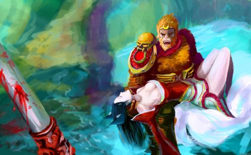
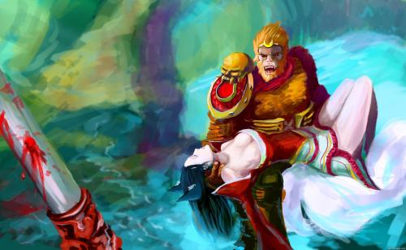

爆头:(被动）每进行几次基础攻击，凯特琳的下一击就会附带爆头效果，对英雄造成150%的伤害或对小兵造成250%的伤害.爆头在以英雄为目标时,将忽略目标50%的额外护甲值.
Q技能-和平使者：（主动）凯特琳加速转动步枪,1秒后进行穿透射击,对一个目标造成20/60/100/140/180(+1.3*攻击力)物理伤害.对后续目标的伤害依次递减10%,最低为50%伤害。
W技能-约德尔诱捕器：（主动）凯特琳布置一个陷阱，陷阱可以在短时间里束缚并暴露踩中它的敌方英雄。陷阱会在1.5秒里造成80/130/180/230/280(+0.6*法术强度)魔法伤害，并可以持续4分钟。最多只能有3个陷阱同时存在
E技能-90口径绳网：（主动）凯特琳朝目标地点放出一张网，造成80/130/180/230/280(+0.8*法术强度)魔法伤害，并减少被击中的敌方目标50%的移动速度，持续1/1.25/1.5/1.75/2秒。此外，还会对凯特琳造成反冲效果。
 
